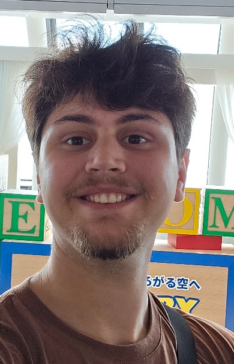

Valentino Nallib Fadel
AI Engineering student · Buenos Aires, Argentina
Fourth-year Artificial Intelligence Engineering student at Universidad de San Andrés, with hands-on project experience in computer vision, deep learning, and natural language models (pre-training and fine-tuning). I like roles that mix research with practical, applied AI development — and side projects that let me build the whole stack myself.
Comfortable across Python, PyTorch, TensorFlow, OpenCV, C/C++, and Linux/Docker environments. Outside of engineering, I've spent years in Scouts leadership and community service work.